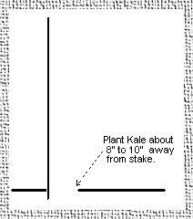

Sow the seed 1/2" deep indoors about five weeks before your last frost. Like many of its family members, Brassica oleracea longata will germinate and grow best at soil temperatures of 55ºF. Transplant to its permanent location (or direct sow the seed outdoors) about one week before last frost. Pick a site in full sun, and be sure to allow at least 40" between plants. Install a stout stake, at least six foot long, with a full 12" under ground. This is a very heavy plant, so the stake must be at least a 2" x 2" or 1" pipe well-anchored. Position the stake 8" to 10" away from the seed (or seedling) to allow for the formation of your "hook".

Planting IllustrationProvide a temporary stake to prevent wind damage until the plant is large enough to begin tying to the permanent stake. Once the second or third tie has been made to the permanent stake, the temporary stake can be removed, and lower ties can be added. Keep the ties loose, so that the plant stem can slide down the stake from its own weight.
Feed the plant every three weeks, and provide plenty of moisture. As the plant grows upward, its weight will begin to pull the stalk down to the ground from the bottom. Once it gets close to the ground, begin excavating the soil underneath so that the heavy stem will gradually sink into the ground below ground level. Place the excavated soil on top of the spot where the crown of the plant is estimated to be, so that the rotation of the crown does not expose any roots. Make sure that there is always a little space under the falling stem to accommodate the expanding hook. Finally, when you feel that the stem is about 6" under the soil level, cover it with soil. That portion of the stem will begin to harden like a tree root.
At this point, your plant should be four to five foot high, with a nice hook underground. Watch for emerging side shoots, and trim them off. Under normal conditions, the cabbage butterflies will leave the kale alone in favor of your ornamental and vegetable cabbages. If necessary, you can use Bt kurstaki powder or spray for control.
It is important to encourage the plant to grow as tall as possible. That is because the growth during its last month will be porous, and that portion of the cane will dry somewhat spongy. You want to have enough length to be able to discard what used to be the top of the plant. Do not pull the plant out of the ground in the fall. Allow it to harden as winter's low humidity pulls the moisture out of the stem.
Finally, on a nice day in February, pull the plants. Chop off the roots at the crown after shaking off the soil. Attach some twine to the hook end of the cane, and suspend from a nail in an airy location protected from rain. Allow to further dry and harden until July. When you feel the stiffness and weight, and imagine that you could hit a golf ball with it, it is ready for processing into a walking stick, or a baseball bat, or a field hockey stick. If you need one walking stick, I would put in nine plants. You will get eight usable sticks out of nine, but only one of them will be perfect.
These are growing instructions for zone 5a, so you might have to make some adjustments for your location. This seed used to be carried by Pinetree Seed Co., but is no longer listed in their catalog. Some searching may be necessary.